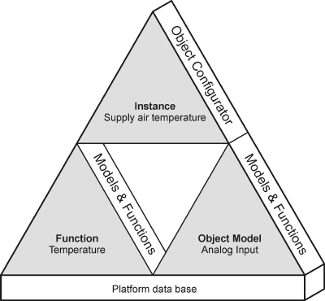
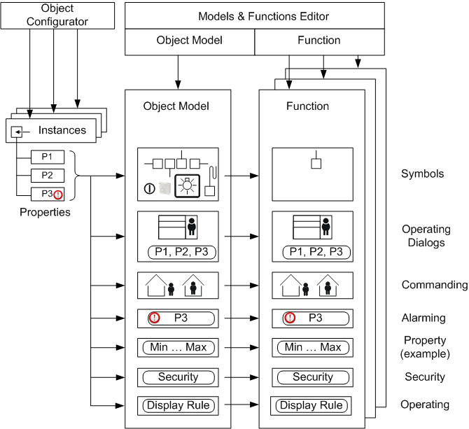

Configuration Editors
We need the following to integrate a system in Desigo CC: Interrelated Object Model, Function, and Instance. All created objects are saved as data points in the platform data base.
Configuring Object Models
Object Models must be created and changed in the Models & Functions editor, Function data mapping in the related Object Model. An Object Model is required for each data type for the corresponding system. This is required since not all object types for a given system have the same information characteristics.
Function Configuration
Function is the abstract functionality of an object and must be created or edited using the Models & Functions editor. The type and number of mapping rules for a Function can be freely selected. Temperature is, for example, a Function. It covers the object functions of a group for supply, extract and room air, and so on. It does not make sense to create a Function, for example, for each individual object, for instance, supply air temperature. This would only result in a large number of specialized Functions that provide few to no additional benefits.
Object Configuration
Instances are customized and may be modified using the Object Configurator. They reflect the number of integrated objects from the project. The operator can modify these instances as needed (for example, record history data or set up management platform alarm).


The open design requires a corresponding Object Model for each data point integrated into Desigo CC. The number of Object Models depends each time on the system to be integrated.
The Models & Functions Editor defines the information relevant to engineering for system objects, for example, detectors or fans. It typically defines the symbol to select during engineering or the operating information to be displayed as per the corresponding user rights. The operator can also define and configure management platform alarms using the Object Configurator.
